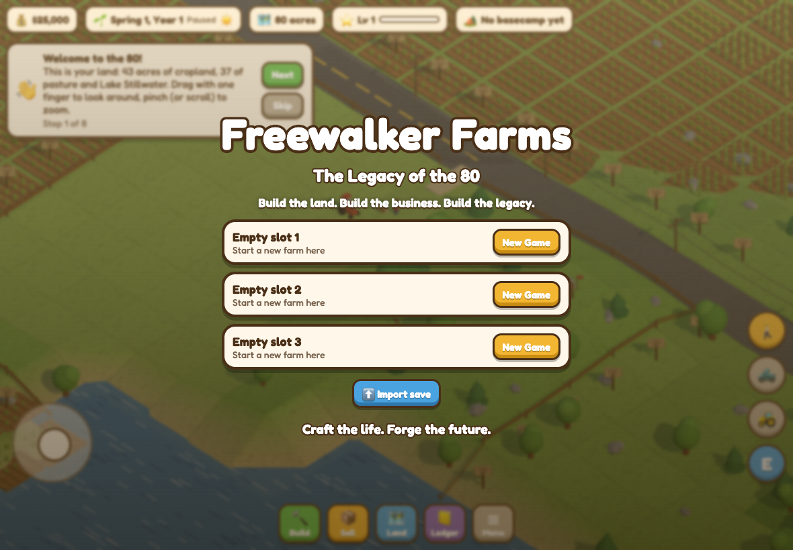
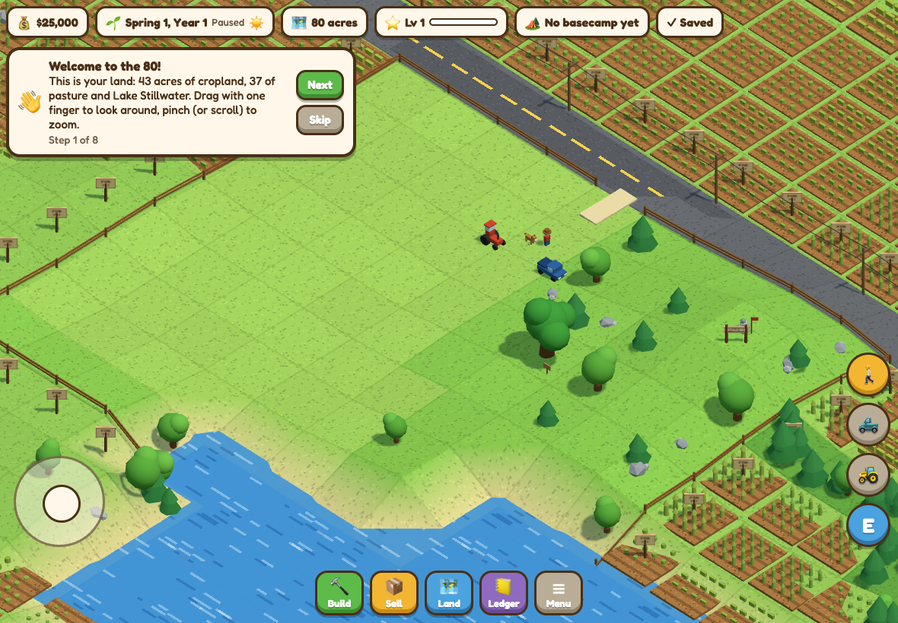
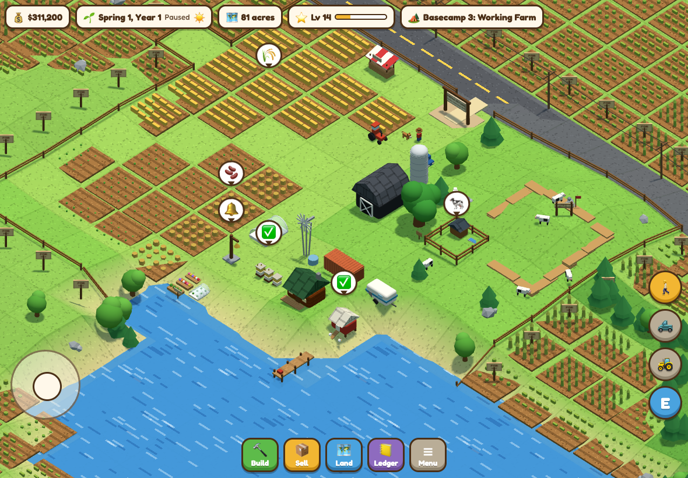
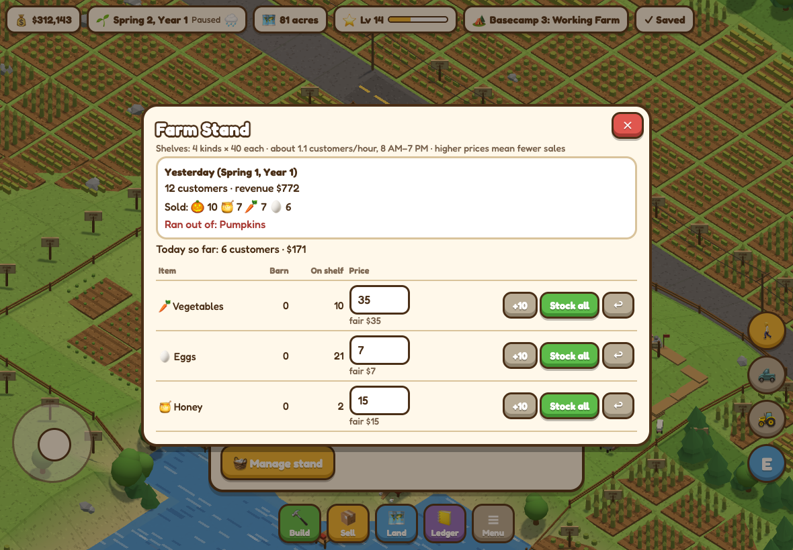
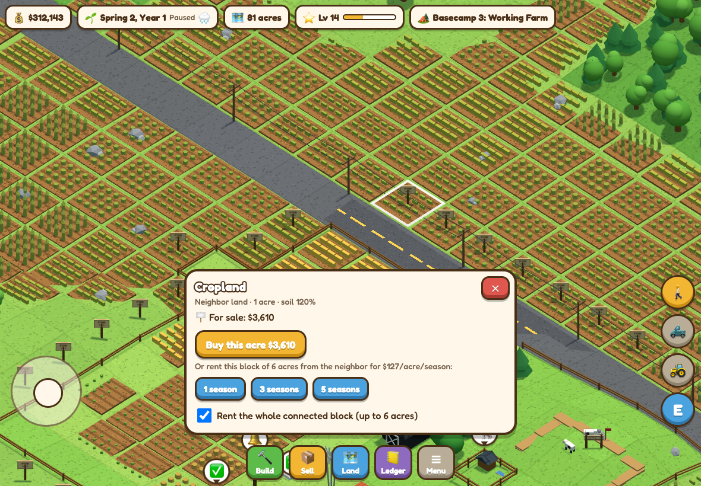
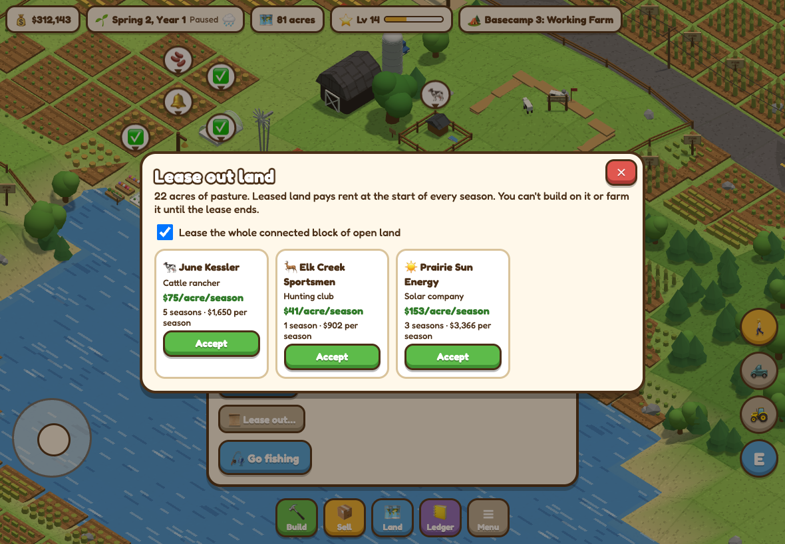
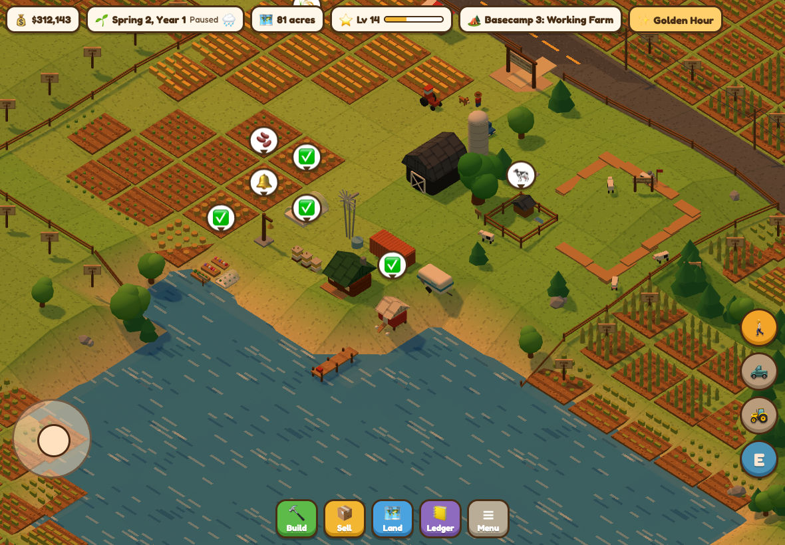
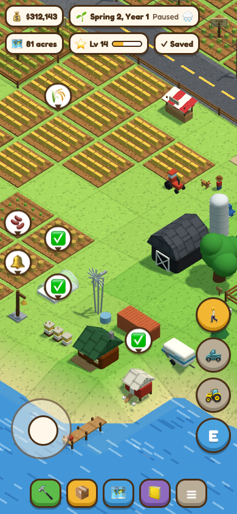

Continue / New Game slots, tagline and closing line.

The inherited 80 acres, Ace, the pickup and the small tractor, with the tutorial card.

Basecamp 3, fields with ready bubbles, cattle, Leonard’s Loop, the first neighbor parcel.

Stocking shelves, setting prices, and the daily sales summary.

A for-sale parcel: price, soil, and the option to rent it instead.

Two or three tenant offers with rent per acre per season and lease length.

Every evening 6–8 PM: warm low sun, long shadows, the Golden Hour badge.

The same farm on a phone-sized screen.